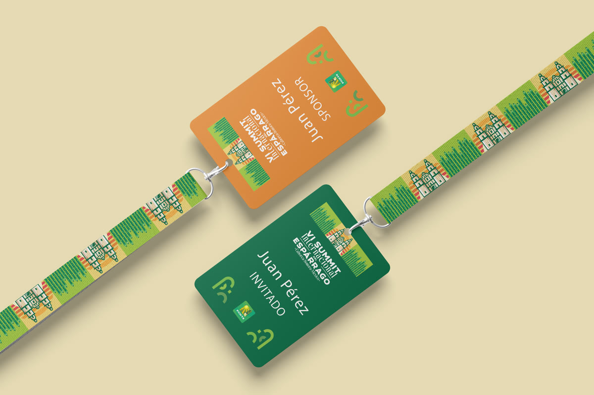

§ 01 — Event system · agribusiness
VI Summit
Visual production at scale so the congress identity stayed coherent across physical and digital formats.
Sixth edition
Physical + Digital
International · agribusiness

Translating the system.
Before printing anything, the matrix had to be in place: typography, grids and composition rules ready to survive the congress volume.
Signage on site.
Vinyl, canvas and modules prepared with clear hierarchy so attendees could read the venue without having to think.


Not redesigning the event — taking the same language to every surface without losing it in translation.
— Production criterionVI Summit · 2025
Up next: the full inventory — signage, merch, editorial and pre-event campaign.
Merch ready to hand out.
VI
Edition · 2025
Physical + Digital
Channels deployed
International
Congress scope
Deliverables
- SignageVinyl, canvas and modules for the main venue and technical areas.
- MerchLanyards, badges and tangible pieces for attendees.
- EditorialPrinted materials with editorial hierarchy aligned to the system.
- Pre-event campaignDigital pieces to announce the congress on social and email.
- DigitalFormats for digital channels and internal communication.
Editorial coherence.
The congress identity was deployed across dozens of surfaces with consistent hierarchy and technical production solved.
ClientVI Summit Internacional del Espárrago
IndustryAgribusiness · international event
RoleProduction designer · final art · rollout
AgencyIntuitiva · Mérida
Year2025
EditionSixth edition
← Previous projectConSentidoBrand rollout · winery estate
Next project →AMXiTechUI/UX · web · B2B tech
© 2026 Julio Morcillo — All rights reserved.
Designed and built in Mérida, MX.